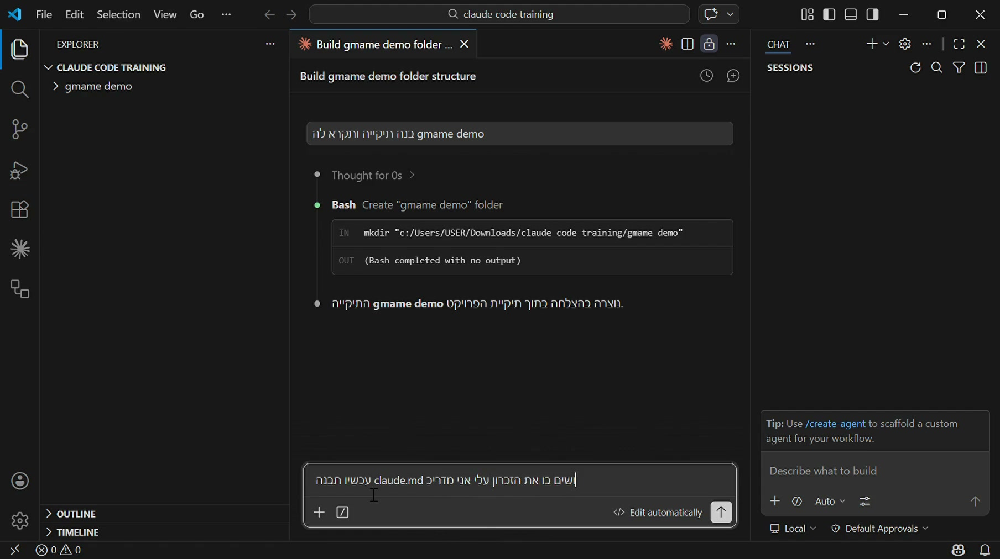
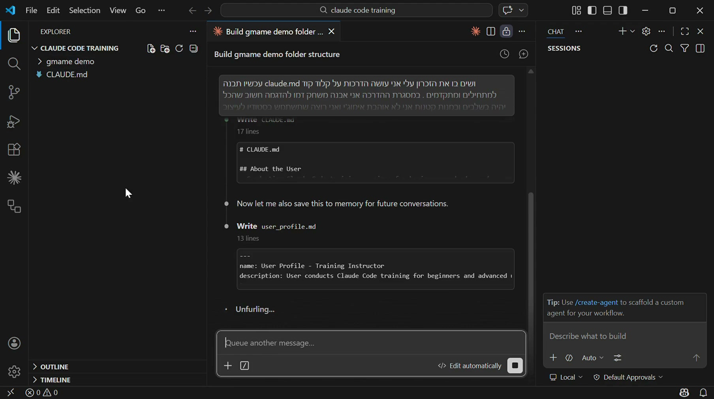
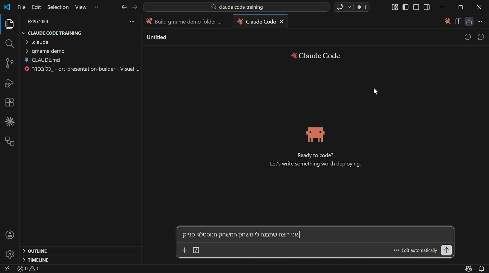
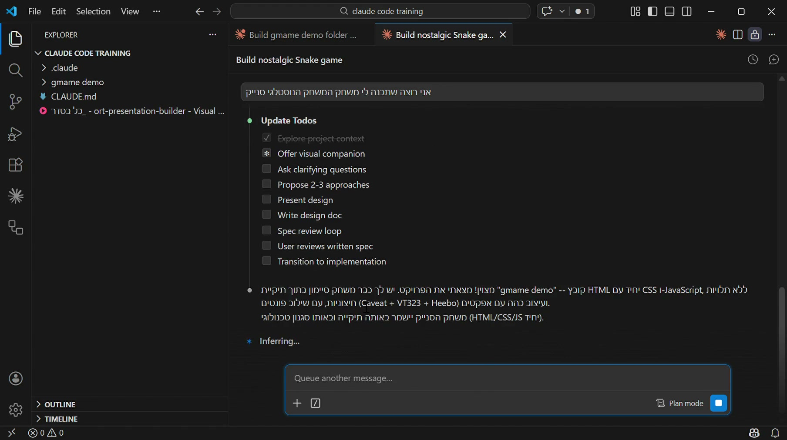
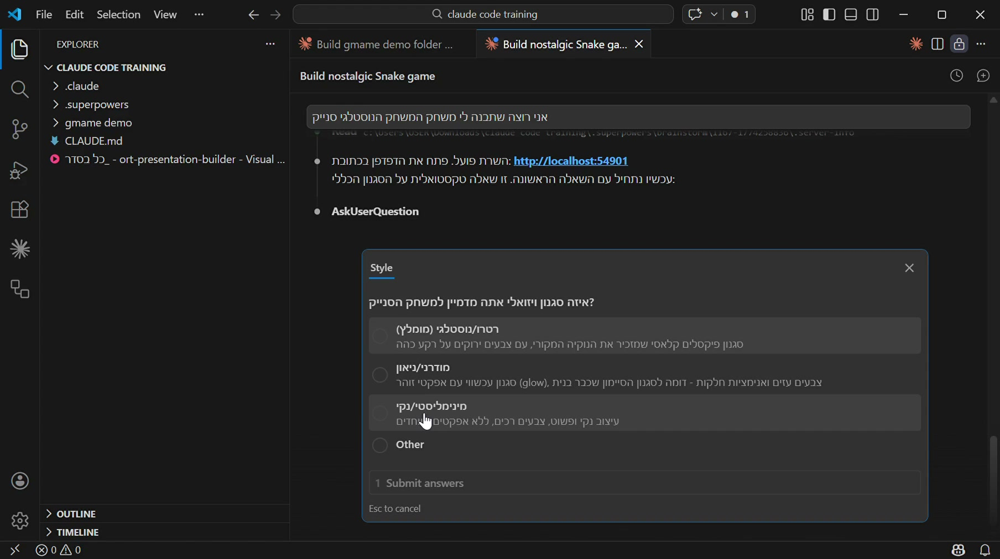
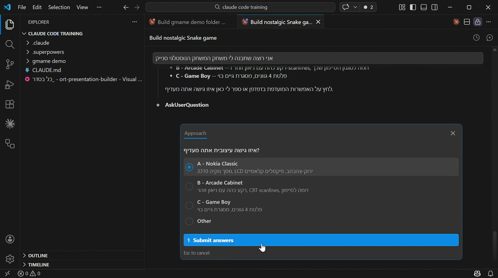
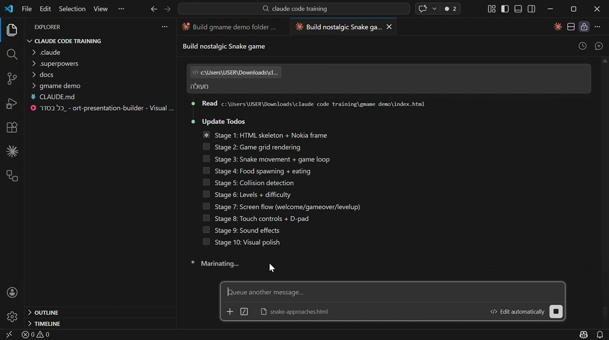
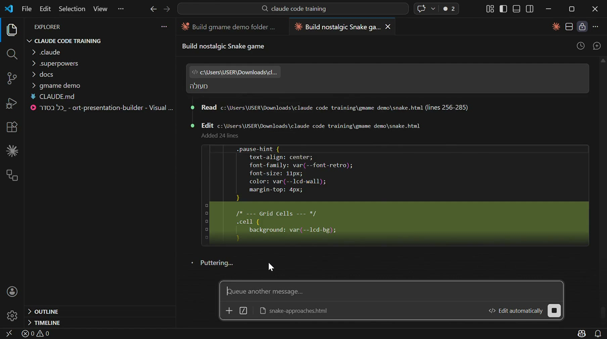
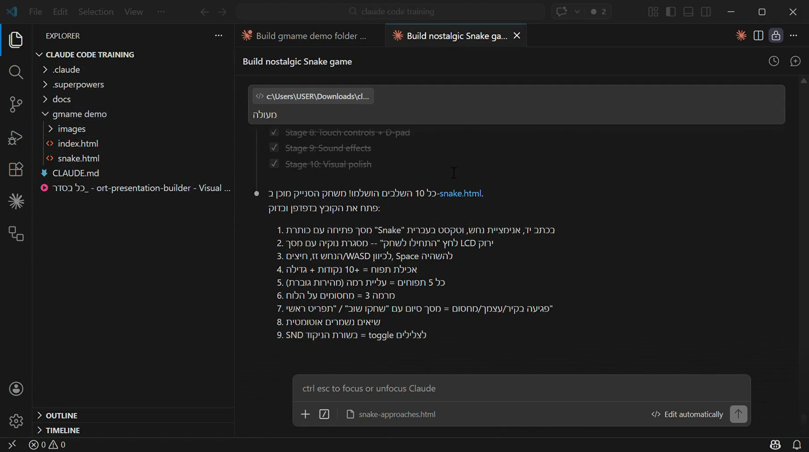

שיעור 1.1יצירת פרויקט + CLAUDE.md
הצעד הראשון — תיקיית פרויקט
כל דבר שתיצרו עם Claude Code חי בתוך תיקייה במחשב שלכם. התיקייה הזו נקראת "פרויקט". לפני שמתחילים, צריך ליצור תיקייה ולפתוח אותה ב-VS Code.
שלב 1 — יצירת תיקייה חדשה
- פתחו את סייר הקבצים (File Explorer)
- לכו לשולחן העבודה או לתיקיית "מסמכים"
- צרו תיקייה חדשה ותנו לה שם — למשל:
my-first-project - חשוב: שם התיקייה באנגלית, בלי רווחים. השתמשו במקף (-) במקום רווח
שלב 2 — פתיחה ב-VS Code
- פתחו את VS Code
- לחצו File → Open Folder
- בחרו את התיקייה שיצרתם
- אם מופיעה שאלה "Do you trust the authors?" — לחצו Yes
שלב 3 — יצירת קובץ CLAUDE.md
CLAUDE.md הוא הקובץ הכי חשוב בפרויקט שלכם. הוא "דף ההנחיות" שאומר ל-Claude מי אתם, מה אתם רוצים, ואיך אתם רוצים שהתוצרים ייראו.
- ב-VS Code, לחצו על הקובץ החדש (הסמל עם ה-+) או Ctrl+N
- שמרו אותו בשם
CLAUDE.md(חשוב — אותיות גדולות!) - כתבו בתוכו את ההנחיות שלכם בעברית

בדמו — ביקשנו מ-Claude לכתוב את קובץ CLAUDE.md בשבילנו, והוא יצר אותו אוטומטית

Claude כותב את CLAUDE.md ושומר את המידע לזיכרון לשיחות הבאות
מה לכתוב ב-CLAUDE.md?
הנה דוגמה לקובץ CLAUDE.md בסיסי:
הנה כמה דוגמאות — בחרו את מה שמתאים לכם:
- מורה: "אני מורה לעיצוב שיער בבית ספר מקצועי. הפרויקט ליצירת חומרי לימוד דיגיטליים. קהל: תלמידי תיכון"
- בעל עסק: "אני מנהל עסק קייטרינג. הפרויקט הוא אתר עם תפריט, גלריה וטופס הזמנה. קהל: לקוחות פוטנציאליים"
- משווקת: "אני מנהלת שיווק בסטארטאפ. הפרויקט הוא דפי נחיתה לקמפיינים. קהל: לידים מרשתות חברתיות"
- יועצת: "אני יועצת חינוכית. הפרויקט הוא כלי דיגיטלי ליצירת דוחות וחומרים מותאמים. קהל: צוות בית הספר"
- חינוך מיוחד: "אני מורה לחינוך מיוחד. הפרויקט הוא חומרי למידה מותאמים לתלמידים עם לקויות למידה. קהל: תלמידים עם ADHD ודיסלקציה"
- עו"ס / רווחה: "אני עובדת סוציאלית במחלקת רווחה. הפרויקט הוא תבניות דוחות, סיכומי ועדות וכלי מעקב. קהל: צוות המחלקה. חשוב: ללא מידע מזהה של מטופלים!"
בכל המקרים, הוסיפו גם:
- שפה: "עברית, כיוון RTL"
- סגנון עיצוב: "מודרני, נקי, צבעוני, עם תמונות"
CLAUDE.md הוא כמו תדריך למעצב — ככל שהוא מדויק יותר, התוצר יהיה טוב יותר. אל תחסכו בפרטים. כתבו מה אתם אוהבים, מה לא, מה חשוב לכם.
צרו תיקיית פרויקט חדשה, פתחו אותה ב-VS Code, וכתבו CLAUDE.md ראשון משלכם. כללו לפחות: מי אתם, מה הפרויקט, ומי קהל היעד.
שיעור 1.2התוצר הראשון — WOW
הרגע שלכם — התוצר הראשון
עכשיו מגיע הרגע הכי מרגש. אתם הולכים ליצור את הדבר הראשון שלכם עם Claude Code. משהו שעובד, שנראה טוב, ושתוכלו להראות לחברים.
בואו נתחיל עם שני תוצרים פשוטים ומרשימים.
תוצר 1 — משחק Snake
פתחו את Claude Code (בחלון הצ'אט בתוך VS Code) וכתבו:
"תבנה לי משחק Snake קלאסי בסגנון נוקיה. שהנחש יהיה ירוק, הרקע שחור, ושתהיה ספירת ניקוד."

ככה נראית בקשה ליצירת משחק — כותבים בעברית ו-Claude מתחיל לבנות
Claude יכתוב את הקוד, ייצור קובץ HTML, ותוך פחות מדקה יהיה לכם משחק עובד. פתחו את הקובץ בדפדפן ושחקו.

Claude שואל שאלות ומתכנן לפני שהוא מתחיל לבנות — הוא לא סתם קופץ לקוד

Claude שואל באיזה סגנון אתם רוצים — רטרו, מודרני, או מינימליסטי

שלוש הצעות עיצוב לבחירה — כאן בחרנו בסגנון Nokia Classic
תוצר 2 — דף נחיתה אישי
עכשיו נסו משהו אחר. כתבו ל-Claude:
"תבנה לי דף נחיתה אישי עם הכותרת [השם שלכם], תיאור קצר שלי, ותמונת רקע יפה. עיצוב מודרני עם צבעי פסטל."
תוך דקה תקבלו אתר אישי מעוצב. אפשר גם לבקש דף נחיתה לעסק: "בנה דף נחיתה לעסק קייטרינג עם תפריט, גלריית תמונות וטופס הזמנה", או דף פורטפוליו: "בנה תיק עבודות עם גלריית פרויקטים ודרכי יצירת קשר".
אם משהו לא מוצא חן בעיניכם — פשוט בקשו שינוי. "שנה את הצבע לכחול", "הגדל את הכותרת", "הוסף קישור לאינסטגרם".
נסו לבקש: "תבנה לי משחק Simon Says צבעוני עם צלילים". או: "תבנה משחק זיכרון עם כרטיסיות של חיות". התוצאות ידהימו אתכם.
איך זה עובד מאחורי הקלעים?
כל פקודה שאתם כותבים בעברית עוברת ל-Claude. הוא מבין מה אתם רוצים, כותב קוד (HTML, CSS, JavaScript), ושומר את הקבצים בתיקייה שלכם. אתם לא צריכים להבין את הקוד — רק לפתוח את התוצר בדפדפן.

Claude מחלק את העבודה ל-10 שלבים ועובד על כל אחד בנפרד

Claude כותב את הקוד — אתם לא צריכים להבין מה כתוב, רק לראות את התוצאה

כל 10 השלבים הושלמו — המשחק מוכן לשימוש!
צרו את התוצר הראשון שלכם. זה יכול להיות כל דבר שתרצו:
- משחק (Snake, Simon, זיכרון, טריוויה)
- דף נחיתה אישי, לעסק, או לפרויקט
- מצגת מקצועית על נושא שמעניין אתכם
- כלי מעשי — מחשבון, טופס הרשמה, תבנית דוח
הדבר החשוב — שתעשו את הצעד הראשון.
שיעור 1.3איך לדבר עם Claude (פרומפטים)
האומנות של הבקשה הנכונה
"פרומפט" זו פשוט הבקשה שאתם כותבים ל-Claude. ככל שהבקשה תהיה ברורה ומדויקת יותר — התוצר יהיה טוב יותר. בואו נלמד כמה כללים פשוטים.
כלל 1 — דברו בעברית, בפשטות
לא צריך שפה מיוחדת. כתבו כמו שאתם מדברים. Claude מבין עברית מצוין.
במקום: "Please generate an HTML-based interactive presentation" - כתבו: "תבנה לי מצגת אינטראקטיבית על הנושא של..."
כלל 2 — היו ספציפיים
ככל שתפרטו יותר, התוצר יהיה קרוב יותר למה שאתם רוצים.
- לא טוב: "תבנה מצגת"
- טוב: "תבנה מצגת על בטיחות במספרה, 10 שקפים, עם תמונות, בעברית, בסגנון מודרני"
- טוב: "תבנה דף נחיתה לקייטרינג עם תפריט, גלריה, טופס הזמנה וכפתור WhatsApp"
כלל 3 — תנו קונטקסט
ספרו ל-Claude למי זה מיועד ומה המטרה. זה משנה הכל.
- "זה לתלמידים בכיתה י, חלקם עם קשיי קשב"
- "זה לקוחות שמגיעים מאינסטגרם, רוב הגלישה מנייד"
- "זה דוח לוועדה מקצועית, צריך להיות רשמי ומסודר"
- "המטרה היא שיבינו את הנושא בצורה פשוטה"
כלל 4 — תקנו ותשפרו
לא חייבים לקבל תוצר מושלם בפעם הראשונה. אחרי שמקבלים תוצר ראשוני, מבקשים שינויים:
- "שנה את הצבע הראשי לכחול"
- "הוסף עוד שקף עם דוגמה"
- "הגדל את הפונט בכותרות"
- "תהפוך את התפריט ליותר בולט"
קיצורי מקשים חשובים
- Escape — עצירת Claude באמצע כתיבה
- Shift+Tab — שליחת ההודעה (במקום Enter)
- /clear — ניקוי השיחה והתחלה מחדש
- /cost — לראות כמה כסף השתמשתם
הדבר הגרוע ביותר שיכול לקרות הוא שהתוצר לא יצא כמו שרציתם — ואז פשוט מבקשים תיקון. אי אפשר לשבור שום דבר. אפשר תמיד להתחיל מחדש עם /clear.
כשבונים תוצרים לקהל מגוון (תלמידים עם לקויות למידה, אנשים מבוגרים, משתמשי נייד), בקשו מ-Claude:
- "תוודא פונט 18 לפחות" — קריאות לכולם
- "תוסיף ניגודיות גבוהה בין טקסט לרקע" — חשוב לכבדי ראייה
- "תוסיף alt text לכל תמונה" — נגישות לקוראי מסך
- "תוודא שהכפתורים גדולים ונגישים בנייד" — חוויה טובה לכולם
Claude יודע ליצור תוצרים נגישים — רק צריך לבקש.
- Claude נתקע או לא מגיב? — לחצו Escape לעצור, ואז כתבו
/clearלנקות את ההקשר ולהתחיל מחדש - התוצר לא נראה טוב? — בקשו תיקון ספציפי: "שנה את הצבע לכחול" עדיף מ"תשפר את העיצוב"
- Claude מחק קובץ או שבר משהו? — כתבו
/undoלביטול הפעולה האחרונה, אוgit checkout -- filenameלשחזור - נגמר ה-context (הודעת שגיאה)? — כתבו
/compactלדחיסה אוטומטית, או/clearלהתחלה נקייה
כתבו 3 פרומפטים שונים לאותו פרויקט (למשל: "בנה לי דף נחיתה") — פעם אחת קצר ופעם מפורט — ובדקו איזה תוצר יותר טוב. שימו לב להבדלים.
שיעור 1.4פרסום — GitHub Pages
מה זה GitHub?
GitHub הוא "ענן" לקוד. כמו Google Drive לקבצים, GitHub שומר את הקוד שלכם באינטרנט. אבל הדבר המגניב — הוא גם יכול להפוך את הקוד לאתר חי שכל אחד יכול לגלוש אליו.
השירות הזה נקרא GitHub Pages והוא חינמי לגמרי.
שלב 1 — יצירת חשבון GitHub
- היכנסו ל-github.com
- לחצו "Sign up" וצרו חשבון (חינם)
- בחרו שם משתמש באנגלית — זה יהיה חלק מכתובת האתר שלכם
- למשל: אם בחרתם
sarah-teacher, האתר שלכם יהיהsarah-teacher.github.io
שלב 2 — Commit (שמירת שינויים)
Commit זה כמו "שמירה" — אבל שמירה חכמה שזוכרת את ההיסטוריה. כל commit הוא נקודת שמירה שאפשר לחזור אליה.
אפשר לבקש מ-Claude לעשות commit בשבילכם. פשוט כתבו: "תעשה commit לשינויים".
שלב 3 — Push (העלאה לענן)
Push שולח את הקבצים מהמחשב שלכם ל-GitHub. אחרי push, הקבצים שמורים בענן ולא יילכו לאיבוד.
גם את זה Claude יכול לעשות: "תעשה push ל-GitHub".
בפעם הראשונה, Claude יעזור לכם ליצור repository (מאגר) חדש ב-GitHub ולחבר אותו לתיקייה שלכם.
שלב 4 — הפעלת GitHub Pages
- היכנסו למאגר שלכם ב-GitHub (github.com/שם-משתמש/שם-פרויקט)
- לחצו על Settings (הגדרות)
- בתפריט הצדדי, לחצו על Pages
- ב-Source בחרו "Deploy from a branch"
- ב-Branch בחרו "main" ולחצו Save
- תוך דקה-שתיים האתר שלכם יהיה באוויר
תוך 5 דקות יש לכם אתר אישי בכתובת yourname.github.io. אתם יכולים לשלוח את הקישור לכל אחד בעולם והם יראו את מה שיצרתם.
עדכון האתר בעתיד
כל פעם שתרצו לעדכן את האתר, פשוט עשו שינויים, commit ו-push. האתר מתעדכן אוטומטית תוך כדקה. אפשר לבקש מ-Claude: "תעשה commit ו-push לשינויים" — והוא יטפל בהכל.
אל תעלו לGitHub קבצים אישיים (סיסמאות, תמונות פרטיות). GitHub הוא פומבי — כל אחד יכול לראות את מה שמעלים. רק קוד ותוצרים לפרסום.
פרסמו את הפרויקט שלכם באינטרנט:
- צרו חשבון GitHub (אם עוד אין לכם)
- בקשו מ-Claude: "תעזור לי ליצור repository חדש ב-GitHub ולפרסם את הפרויקט"
- הפעילו GitHub Pages
- שלחו את הקישור לחבר ובדקו שהאתר עובד
בדיקת ידע — מודול 1
1. מה זה CLAUDE.md?
2. מה עושה Commit?
3. איך מפרסמים אתר ב-GitHub Pages?